Префектура Канагава · Камакура · еда
Femme de Bateau Aoki: ресторан в Камакуре, хозяйка которого сама выходит в море
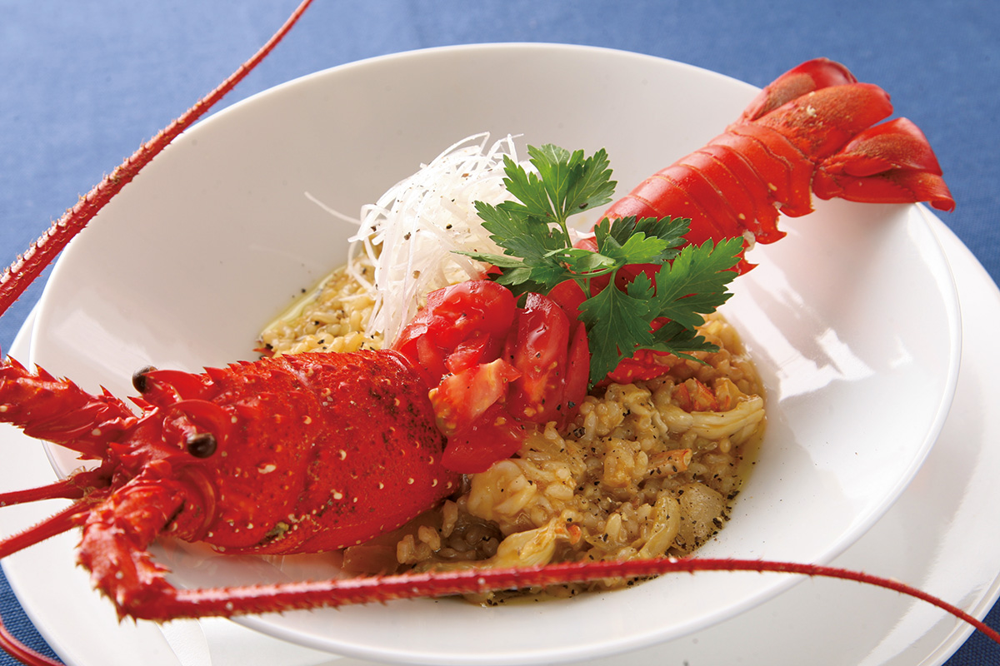
Камакура в часе езды от Токио славится храмами и пляжами, а ещё это одна из самых богатых кладовых морепродуктов рядом со столицей. В переулке у станции работает ресторан, где рыбу на тарелке часто поймала сама хозяйка.
Камакура
Дверь, мимо которой проходят все
Летом Камакура становится ещё и пляжным курортом. Но на улицах вокруг станции в основном заведения для туристов: рисовых мисок с морепродуктами хватает, а настоящей кухни найти непросто. Ресторанный критик, которая писала об этом месте в 2021 году, пожаловалась на это знакомому из местных, и тот назвал ей один адрес.
По его словам, ресторан стоит в переулке в двух минутах от станции Камакура линии JR, и большинство проходит мимо, даже не заметив его. Тот, кто решится открыть дверь, удивляется. Готовит хозяйка, Соноко Аоки, одна. Кухня у неё не привязана ни к какому жанру, рыба и овощи здесь отменные, а сама хозяйка выходит в море ловить рыбу.
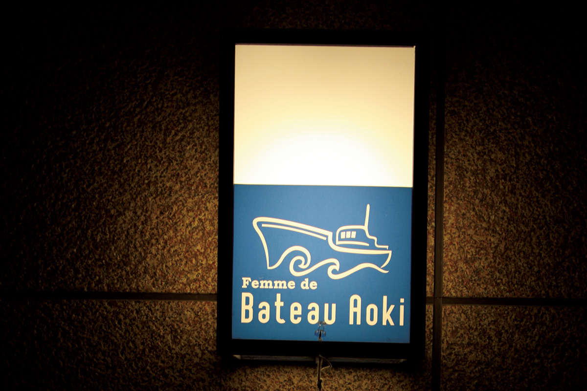
Море
Утро в порту Коцубо
С хозяйкой договорились встретиться в рыбацком порту Коцубо. На полуострове Миура много больших и малых гаваней, а Коцубо совсем маленький порт между яхтенными гаванями Дзуси и Хаямы.
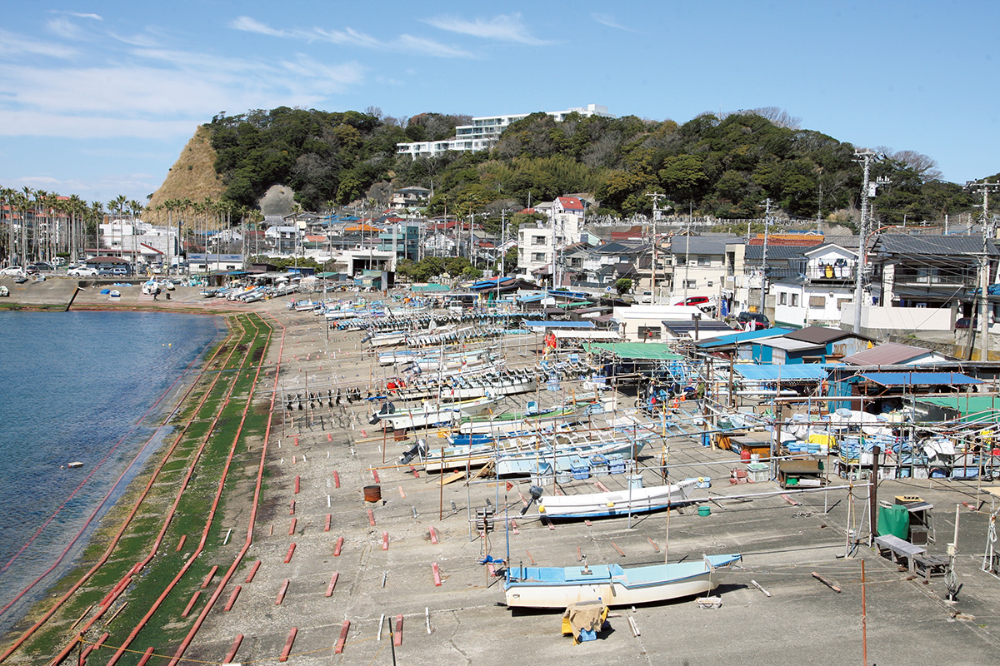
Ждать пришлось два часа. Наконец Соноко Аоки появилась на рыбацком судне: в тот день в море случилась неприятность, и вернулись позже обычного. Обычно улов обрабатывают прямо на борту и сразу везут на рынок. Трудно поверить, что она провела на качающейся палубе около восьми часов: движения у неё быстрые и точные. Одну за другой она обрабатывает рыбин, начиная с камбалы, у которой как раз был сезон, и только закончив, садится поговорить.
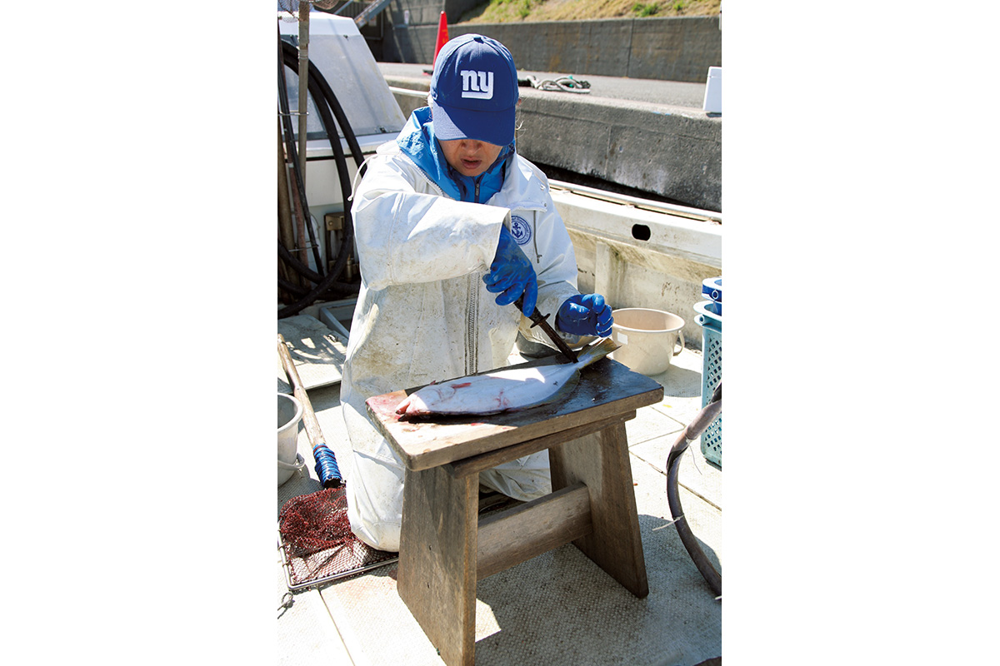
Родилась Соноко Аоки в Токио, но с восьми лет живёт на побережье Сёнан, в районе Дзаймокудза у моря Камакуры. «Я очень люблю море и так и не смогла отсюда уехать», говорит она. В двадцать с небольшим она работала в местном ресторане японской кухни и там научилась основам. «Мне нравилось готовить, и я подумала, почему бы не открыть своё дело».
Первый ресторан она открыла у пляжа Юигахама. Через девять лет освободилось нынешнее помещение в квартале Комати у станции, и около 2015 года она переехала. Тогда же начала выходить в море, а новое название ресторана по-французски значит «Женщина с корабля, Аоки».
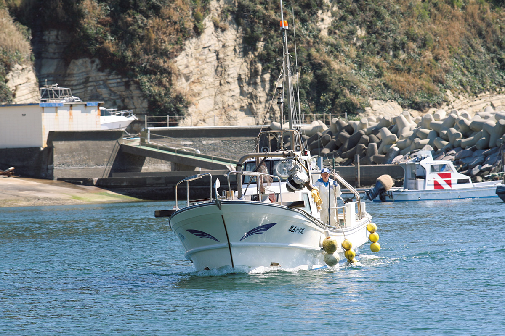
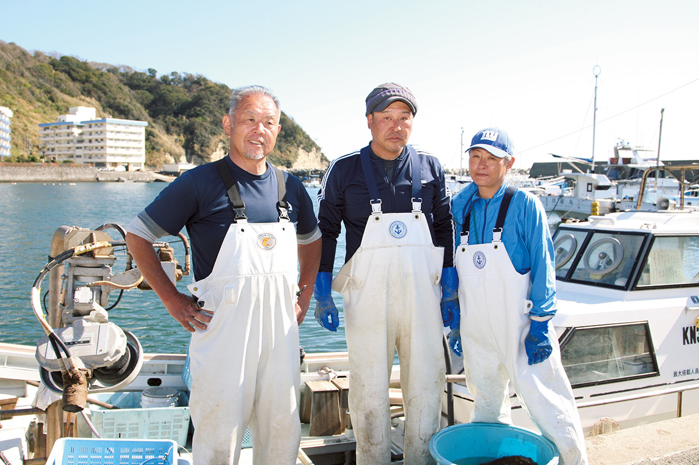
Совмещать ресторан и рыбалку тяжело. «Раньше я с утра выходила в море, днём готовила заготовки, а вечером работала в ресторане. Теперь сил на это уже нет. Хочу заниматься делом как можно дольше, поэтому в море выхожу только в выходные дни ресторана». Даже когда во время пандемии коронавируса ресторан закрывался, на лов она выходила.
На волне моды на рыбалку многие девушки хотят стать рыбаками, но надолго остаются единицы: большинство сдаётся, едва попробовав себя помощником на судне. Соноко Аоки из тех, кто остался.
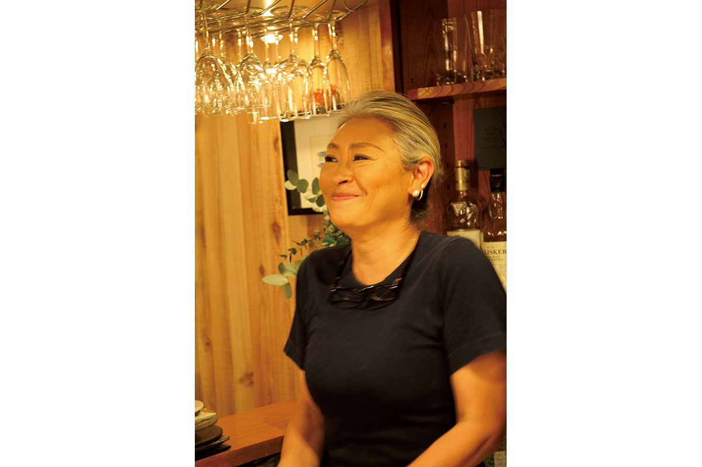
Не только рыбу, но и овощи она покупает у тех, кто их выращивает и ловит, или сама едет на рынок. В японском слове «готисо», угощение, заложен смысл «бегать, чтобы собрать вкусное для гостя», и здесь оно подходит буквально.
Кухня
Рыба, которую хочется есть
Меню меняется каждый день. В основе японская кухня, которая бережёт вкус продукта, а травы, специи и сыр иногда уводят блюдо в сторону Италии или Юго-Восточной Азии. «Когда спрашивают, что у нас за кухня, я не знаю, что сказать. Отвечаю, что это кухня, в которой вкусно есть рыбу», говорит хозяйка.
Масла она использует немного, поэтому после ужина тяжести нет, хотя порции сытные. Лапшу и рис в конце всё равно хочется заказать. Сакэ в основном чистое рисовое, дзюммай.
Есть и постоянные блюда. Яркий «карпаччо» меняется по составу, но рыбу всегда подают вместе с цветами и овощами.
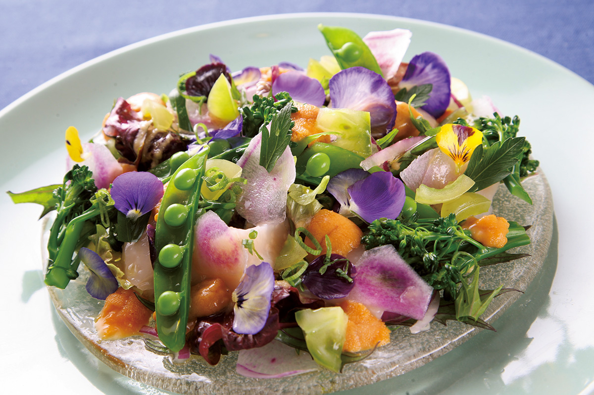
Вот что подавали в один весенний вечер 2021 года. На закуску были мэкабу, утолщённая часть у основания вакамэ, и тушёная вакамэ с кальмаром, 550 иен. Сашими из утренних морских улиток сазаэ, нарезанное тонко и уложенное букетом в стеклянной посуде, и сашими из морского петуха хобо с нежной сладостью стоили по 1100 иен. Хобо сначала едят с солью, а потом с зелёным луком, цитрусом кабосу и васаби. Местные моллюски хамагури с молодым бамбуком из Камакуры, тушёные в белом вине со сливочным маслом, стоили 1700 иен.
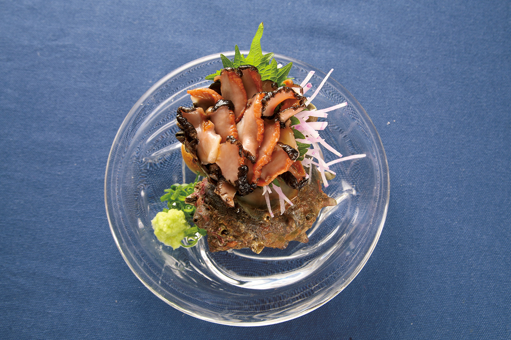
У хозяйки есть и лицензия повара фугу. Тигровую фугу из Коцубо она жарит во фритюре и подаёт с кинзой и лаймом.
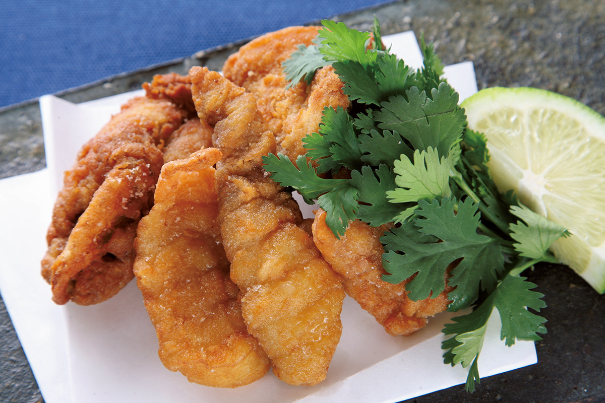
На сытное есть пицца из цельнозерновой муки с мальками сирасу, местным осьминогом, имбирём мёга и водорослями аоса, 1870 иен, и сэндвич с камбалой в панировке и тартаром из камакурских овощей и тофу, 2200 иен. Майонез для тартара делают сами, из соевого молока и уксуса. Когда привозят японского лангуста, в меню появляется рисотто из бурого риса со свежими томатами, 2900 иен: лангуста кладут целиком.
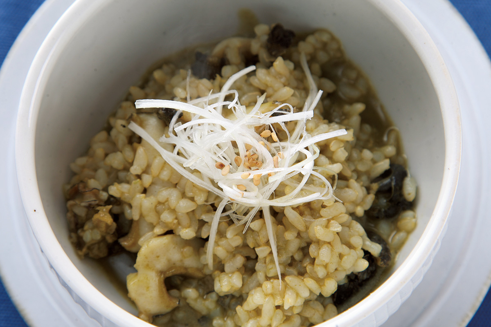
Зал
«Дворец морского дракона» в Камакуре
Зал ресторана сравнивают с Рюгу-дзё, подводным дворцом морского дракона из японских сказок. Стену целиком занимает гобелен работы мастера индиго, а под потолком висят светильники в виде пузырьков, их сделала дизайнер света из Вены.
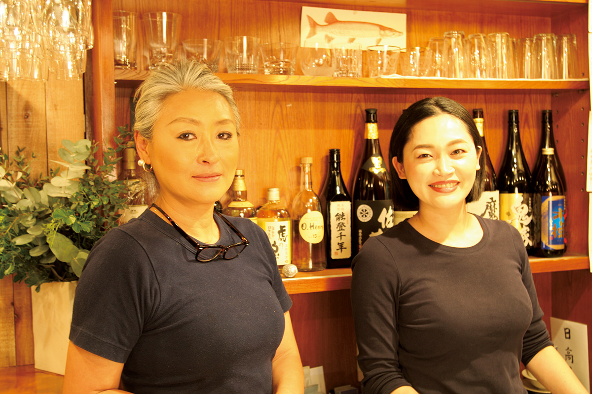
Femme de Bateau Aoki
- Адрес
- префектура Канагава, Камакура, Комати, 1-5-9
- Телефон
- +81 467-53-8339
- Часы работы
- 17:30–21:00 (последний заказ в 20:00)
- Выходные
- среда, четверг
- Цены / Вход
- около 10 000 иен, только заказ отдельных блюд
Фото: Мунэаки Маэда.